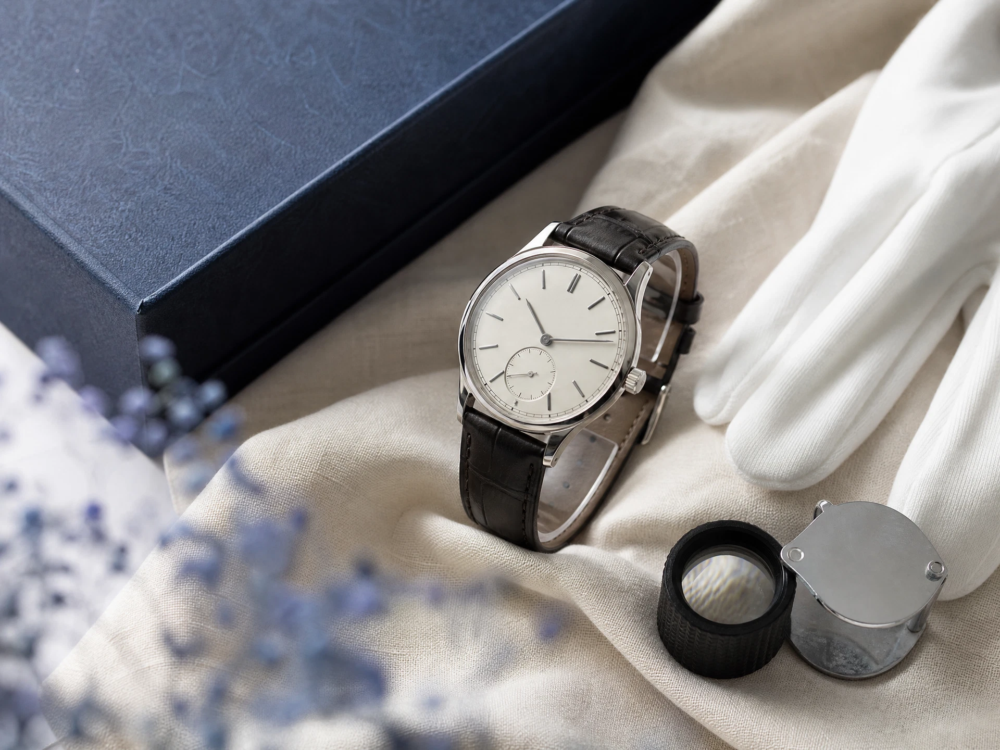

Our Business
事業内容
査定から販売、暮らしのサポートまで。三つの事業を通じて、モノの価値と人の想いを次へつなぎます。
Three businesses, one belief.
価値をつなぎ、
信用を育てる。
「誠実な査定」×「確かな販路」。私たちは、この二つがそろってこそ、モノの価値を正しく次へつなげられると考えます。
買取を担うTrust vintage、販売を担うTrust Retail Lab、暮らしの節目に寄り添うTrust Life。三つの事業を通じて、一人ひとりに合ったお付き合いを目指します。
Business 01
Trust vintage
ブランド品・時計買取
価値を見極める。その先の想いまで。
大切に使われてきた時計やブランド品には、持ち主だけが知る物語があります。状態や市場の動向を見極めながら、その背景にも耳を傾ける。納得につながる対話を、査定の出発点にしています。
査定の根拠をわかりやすくお伝えし、売却の判断をお客様自身で選べるように。目先の取引だけで終わらない、長く相談できる関係を目指します。
Business 02
Trust Retail Lab
リテール研究・EC販売
モノが、もう一度輝く場所へ。
国内外の相場や販売動向を研究し、それぞれの商品が必要とされる市場へつなぐ。買取の先にある販売まで考えることが、適正な価値の循環を支えます。
商品の魅力が正しく伝わる情報づくりと、販売チャネルの検討を積み重ねます。リユースとECの可能性を探り、モノと次の持ち主との出会いを生み出していきます。
Business 03
Trust Life
遺品整理・ライフサポート
暮らしの節目に、寄り添う存在へ。
遺品整理や生前整理は、モノの整理だけではありません。ご家族の気持ちやこれからの暮らしに関わる、大切な時間でもあります。お話を伺い、急がず、一つずつ進め方を考えます。
残したいもの、次へつなぎたいもの。それぞれのご意向を確かめながら、査定と整理の視点からお手伝いすることを目指します。対応内容や地域は、ご相談時に個別にご確認ください。
The way we work
ご相談から始まる、お付き合い。
- 01
お話を伺う
お品物やご事情、ご希望を伺い、必要なサポートを整理します。
- 02
価値と選択肢を伝える
状態や市場の動向を踏まえ、ご判断に必要な情報をお伝えします。
- 03
次の一歩へつなぐ
ご意向を確認しながら、売却や整理などの次のステップを考えます。
Let's connect.
事業のご相談や、私たちへのお問い合わせはこちら。